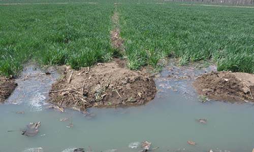

|
||||||||
|
||||||||
|
 污水灌溉是指以经过处理并达到灌溉水质标准要求的污水为水源所进行的灌溉。城市污水，不仅是郊区稻田的重要水源，而且也是重要的肥源。据测定，污水中含有较多氮，磷、钾、锌、镁等多种养分，有丰富的有机质悬浮物，所以污水灌溉的稻田，节省肥料，降低成本，而且土壤肥力不断提高。污水主要来源于生活污水和工业污水。生活污水水质好、肥分高，对水稻有利。工业污水含有一些不利于水稻生长的重金属盐类，如铅、铬、砷、汞、以及氯、硫、酚、氰化物等有害成分。因此，利用污水灌溉要注意使用方法，取利避害，才能发挥更大作用。 |
|||||||
Copyright 2019 - 2021 南工院 移动1813 朱妍版权所有